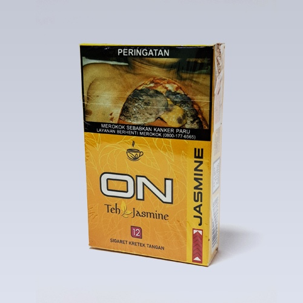
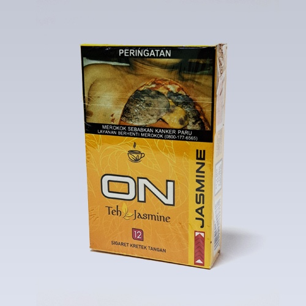
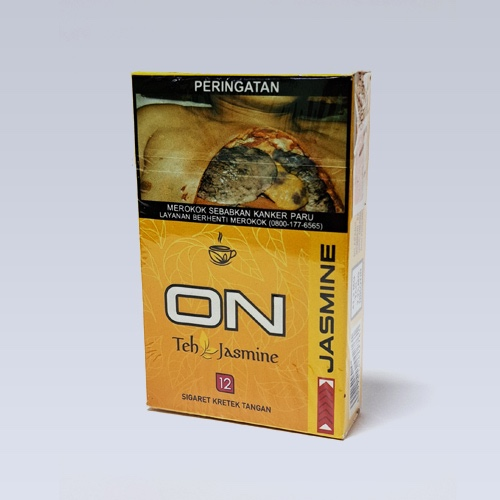

PRODUK


 

VISI
Menjadi perusahaan besar yang terkemuka dan memiliki peran dominan dalam industri rokok Indonesia.
MISI
1. Menyediakan produk-produk inovatif bermutu tinggi dengan harga yang wajar bagi perokok dewasa yang memenuhi, bahkan melebihi harapan konsumen sekaligus memberikan manfaat bagi semua stakeholder.
2. Memberikan kompensasi dan lingkungan kerja yang baik kepada karyawan dan membina hubungan baik dengan mitra usaha.
3. Menjalin hubungan baik dengan masyarakat sekitar dengan memberikan kesempatan kerja bagi mereka yang memenuhi persyaratan perekrutan.
PT. Cakra Guna Cipta adalah perusahaan rokok yang berdiri pada 8 Agustus 1984 atas prakarsa tiga pendiri visioner: Bapak Edi Indra Winoto, Bapak Achyat, dan Bapak Hadi Winata. Pada awalnya, perusahaan memulai operasionalnya di Jalan Ahmad Yani No. 138, Kota Malang, dengan luas area 1.900,2 m².
Seiring dengan pertumbuhan bisnis dan kebutuhan akan fasilitas yang lebih memadai, pada April 1992, perusahaan memindahkan operasionalnya ke lokasi baru di Jalan Raya Kendalpayak No. 332, Kabupaten Malang. Perkembangan ini menjadi tonggak penting dalam perjalanan perusahaan untuk meningkatkan kapasitas dan efisiensi.
Pada tahun 1999, PT. Cakra Guna Cipta melanjutkan ekspansi besar dengan membangun pabrik baru di Jalan Raya Kendalpayak No. 425. Lokasi ini kemudian menjadi pusat kegiatan utama perusahaan. Untuk memenuhi kebutuhan penyimpanan yang semakin meningkat, pada tahun 2022, perusahaan mendirikan gudang terpusat untuk tembakau dan cengkeh di lokasi yang sama.
Tidak berhenti di situ, pada tahun 2023, perusahaan menunjukkan komitmennya dalam inovasi dan peningkatan produktivitas dengan membangun fasilitas rajangan modern berkapasitas hingga 3 ton per jam. Langkah ini menegaskan posisi PT. Cakra Guna Cipta sebagai salah satu pemain utama di industri rokok, yang terus berkembang dengan visi dan dedikasi yang kuat.
Sejarah panjang ini menjadi cerminan perjalanan perusahaan dalam menghadapi tantangan, beradaptasi dengan perubahan, dan terus berinovasi untuk masa depan yang lebih baik.

Proses produksi kami mencakup dua kategori utama: SKM dan SKR.


Dimulai dengan membuat rokok batangan dengan mesin, packing, pemasangan cukai sampai dengan masuk karton.
Mesin pembuatan batangan memiliki kapasistas produksii 5.000 batang per menit dan beroperasi selama 7 jam per shift ...

PT Cakra Guna Cipta terus mempertahankan tradisi keahlian dalam produksi Sigaret Kretek Tangan (SKT), dengan kapasitas produksi mencapai 3.600 batang per hari. Berbeda dengan produksi rokok mesin, setiap langkah dalam pembuatan SKT dilakukan secara manual oleh tenaga terampil...

Bagaimana cara sortir rokok jenis SKT pada PT. Cakra Guna Cipta? Mari kita pelajari bersama!
Pertama akan dicek pada kertas pembungkus rokok, apakah ada bagian rusak atau tidak, lalu kedua ...
PT CAKRA GUNA CIPTA